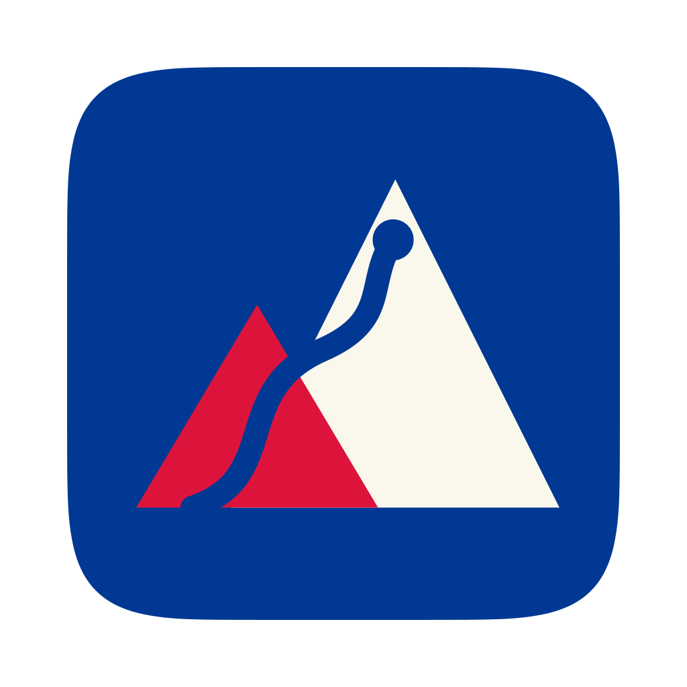
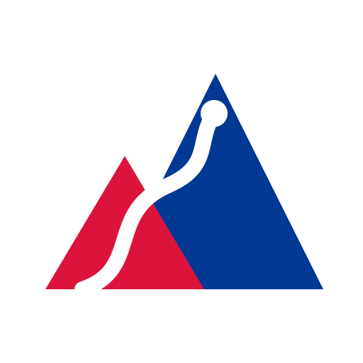
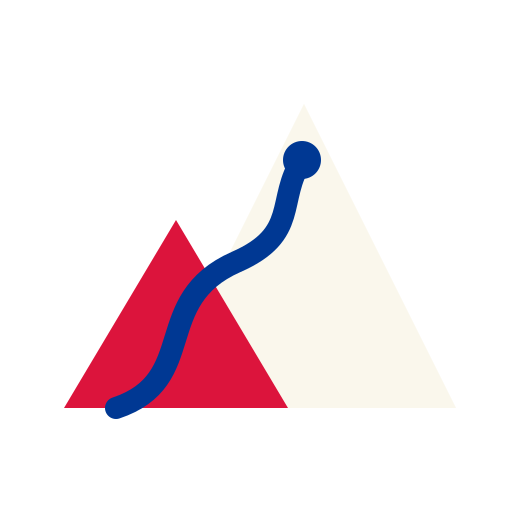

Mark 1 of the six, twin peak with a route to the summit: a peak behind a crimson one, a route climbing to a summit marker. A sirdar is the head guide of a Himalayan expedition, and the colours are Nepal's flag.
#DC143C
Blue #003893
White #FFFFFF
Paper #FAF7EC
Blue and white simply trade places. The light tile is paper with a blue peak behind the crimson and a white route; the dark tile makes the blue the ground, the paper the back peak, and puts the route in blue. Crimson holds on both. There is no ink tile: the round drew one, and the swap replaced it, which leaves two colour sets to keep in step rather than three.
Both are on the 1024 grid with the mark and its squircle inset to 824 square, Apple's figure, so the 100pt margin is left for the system shadow. The corners are transparent; macOS draws no frame.

scripts/make-icons.sh rasterises into desktop/build/appicon.png.
The sizes that decide whether a mark works: the Finder's list, the menu bar and a browser tab. The route is gone by 16 and two triangles are left, which the round said it would be. The gap between the peaks is what still reads, and it reads at 16.
What the app draws. The sidebar's brand row, the two favicons and the landing page's wordmark all take the mark with no tile under it, so it has to survive on whatever surface it lands on. Each variant is shown on the grounds it is meant for, and on one it is not.

Light, on paper Light, on the card surface
Dark, on the dark shell Dark, on its own tile's blueThe white route on paper is the one thin place: where the route crosses the few pixels of ground between the two peaks it is invisible on a light surface, and the round accepted that when it drew the mark. On the tile it never shows, because the peaks sit on their own ground.
The mark with the word, at the gap the round drew: 0.36 of the mark's size, which is 8 against the 20px mark in the sidebar and 7 against the 18px one in the landing page's nav. sirdar-wordmark.svg is the standalone file — live text in Figtree, falling through to the shell's own grotesque, so it stays selectable.
The first is the file. The second is the app's sidebar, 22px Figtree beside the 20px mark. The third is the landing page's nav, the lowercase mono wordmark that page has always used.
| File | What it is | What reads it |
|---|---|---|
sirdar-mark-light.svg | The bare mark, light set, 512 grid | desktop/frontend/public/favicon.svg and site/favicon.svg are copies of it; src/ui/brand-mark/ redraws its geometry and a test holds the two together |
sirdar-mark-dark.svg | The same, dark set | The dark half of src/ui/brand-mark/, held to it by the same test |
sirdar-tile-light.svg | The mark on its squircle, 1024, inset to 824 | scripts/make-icons.sh → desktop/build/appicon.png → the .icns Wails builds into the app |
sirdar-tile-dark.svg | The same, dark set | Nothing ships it. It is the reference for the dark surface. |
sirdar-wordmark.svg | Mark and word, one file | Nothing in the build. It is the asset to hand somebody who asks for the logo. |
index.html | This page | Nobody. It is the record of what was shipped. |
Sirdar, 16 September 2026. The six candidates and the brief are in ../index.html; the recipe for the .icns is in ../README.md, and scripts/make-icons.sh is that recipe, run.